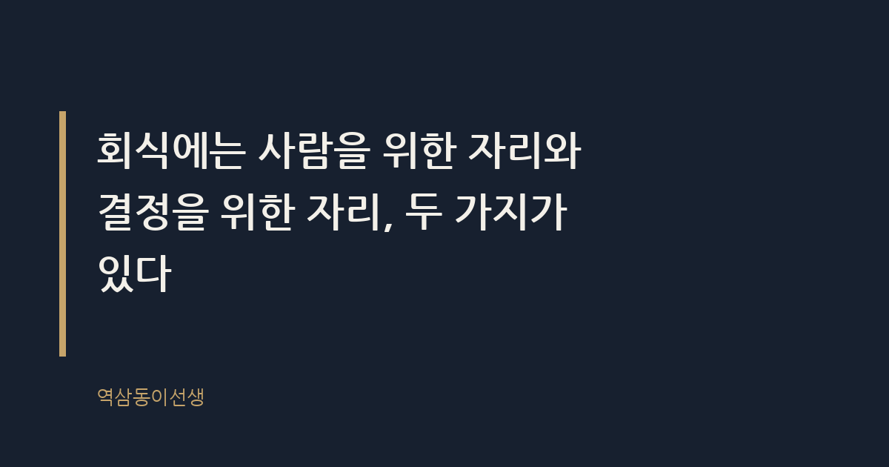
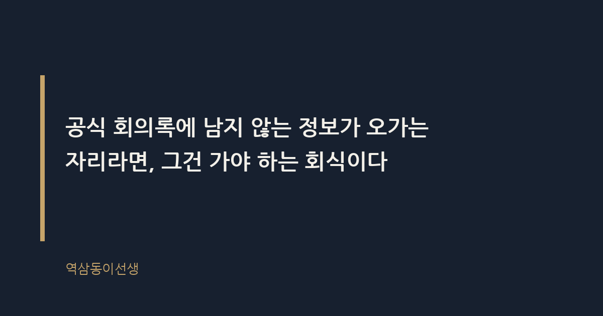

주제 회식 자리, 빠져도 되는 날과 가야 하는 날 (evergreen / office)
제목 후보
메타 설명 회식, 다 빠지면 된다고? 25년 직장생활로 알게 된 진짜 기준은 따로 있다. 가야 하는 회식과 빠져도 되는 회식을 구분하는 법.
라벨 회식문화, 직장생활, 회식매너, 회사생활팁, 신입사원, 회식참석기준, 야근회식, 워라밸직장인, 회식불참, 조직문화, 비공식소통
실용 자산 계산·기준 표 — '빠져도 되는 날/가야 하는 날'은 기준을 찾는 도구형 검색 의도이므로, 상황별 참석 판단표를 넣어 바로 적용할 수 있게 했다
발행 전 팩트체크
이미지 (Blogger 편집기에 드래그해 넣으세요)
도입부 사진 · ⓒ PublicCo / Pexels


지난주 금요일 저녁 7시, 팀 막내 민지가 내 자리로 조용히 다가왔다. "팀장님, 저 오늘 회식 빠져도 될까요? 선약이 있어서요." 뭐냐고 물으니 소개팅이라고 했다. 나는 바로 "가"라고 했다. 그런데 딱 2주 뒤, 분기 실적 발표를 마친 날 저녁 같은 민지가 또 빠지겠다고 했을 때는 "그건 좀 참아"라고 말렸다. 민지는 억울한 표정이었다. 같은 회식인데 왜 어떤 날은 되고 어떤 날은 안 되냐는 거였다.
맞는 질문이다. 회식은 다 같은 회식이 아니다. 회식에는 사람을 위한 자리와 결정을 위한 자리, 두 가지가 있다. 전자는 빠져도 되고, 후자는 가야 한다. 이 구분을 못 하면 매번 눈치만 보다가 정작 중요한 자리는 놓치고, 안 가도 될 자리에는 억지로 끌려간다. 25년 동안 양쪽 다 당해보고, 양쪽 다 시켜본 입장에서 그 기준을 정리해본다.
회식이란 공식 업무 시간 밖에서 조직 구성원이 모여 식사나 술자리를 갖는 비공식 소통 관행을 말한다. 원칙적으로 근로기준법상 근로시간에는 포함되지 않는다. 고용노동부의 행정해석도 회식을 사용자의 구체적인 지휘·감독이 미치지 않는 사적 성격의 모임으로 보는 쪽에 가깝다. 그러니 "회식은 업무의 연장이니 무조건 가야 한다"는 말은 법적으로는 근거가 약하다.
다만 예외가 있다. 회식 중 발생한 사고가 업무상 재해로 인정된 판례들이 존재한다. 핵심 기준은 그 회식이 사업주의 지배·관리 아래 있었는가, 즉 참석이 사실상 강제되고 비용과 일정을 회사가 정한 공식 행사였는가다. 전사 워크숍 뒤풀이나 부서장이 주관하는 회식은 이 기준에 걸릴 가능성이 있다. 법이 회식을 보는 눈도 결국 "이게 자발적이었나, 강제였나"를 따진다는 뜻이다.
그런데 현장에서는 이 법적 기준과 체감 온도가 다르게 움직인다. 회사가 아무리 "회식은 자율 참석"이라고 공지문에 써 붙여도, 팀장이 전원 참석 메시지를 단체 채팅방에 올리는 순간 그 자리는 더 이상 자율이 아니다. 법은 강제성 여부를 따지지만, 조직은 분위기로 강제한다. 이 간극을 모르고 공지문만 믿었다가 혼자 빠졌던 신입 때의 나를 아직도 기억한다. 다음 날 팀장이 "어제 재밌었는데"라고 지나가듯 던진 한마디가, 사실은 가볍게 던진 말이 아니었다는 걸 한참 뒤에야 알았다.
법적으로 의무가 아니어도 현실에서는 가야 하는 회식이 분명히 있다. 그 이유는 공식 회의록에 남지 않는 정보와 평판이 바로 그 자리에서 오가기 때문이다. 내가 임원으로 10년 넘게 앉아 있으면서 본 건, 중요한 인사이동 힌트나 프로젝트 재배치 신호의 7할은 회의실이 아니라 술자리에서 먼저 흘러나왔다는 사실이다. 공식 보고 라인과 비공식 네트워크 라인은 늘 함께 움직인다. 브랜드가 광고라는 공식 채널과 입소문이라는 비공식 채널을 동시에 관리하듯, 조직도 마찬가지다.
몇 년 전 후배 하나가 신제품 론칭 뒤풀이에 "너무 피곤하다"며 1차만 하고 빠졌다. 그날 2차 자리에서 담당 임원이 다음 분기 TF 구성 이야기를 꺼냈고, 그 자리에 남아 있던 다른 팀원이 자연스럽게 TF장 후보로 거론됐다. 공식 인사 발령은 두 달 뒤에 났지만, 사실상 결정은 그 술자리에서 이미 기운 셈이었다. 그 후배는 실력이 부족해서가 아니라 그 자리에 없었기 때문에 기회를 놓쳤다.
그래서 임원이 참석하는 회식, 프로젝트가 막 끝났거나 새로 시작하는 시점의 회식, 송별·환영회는 성격이 다르다. 여기서는 사람이 평가받고, 다음 자리가 결정되고, 누가 누구와 일할지가 암묵적으로 정해진다. 빠지는 건 자유지만, 빠지는 순간 그 테이블에서 오간 정보에서 본인만 배제된다. 손해를 보는 건 본인이다.
반대로 그냥 "요즘 다들 바쁘니 소주나 한잔 하자"는 자리는 다르다. 의사결정도 없고 정보도 없다. 피로를 풀고 안부를 확인하는 자리일 뿐이다. 여기서 빠진다고 다음 승진에서 밀리는 일은, 적어도 내가 본 25년 동안은 없었다.
같은 회식이라도 연차에 따라 가야 할 무게가 다르다. 신입 1~2년 차는 회식에서 평가받을 정보가 거의 없다. 아직 조직이 "이 사람을 어디에 쓸지" 고민하는 단계가 아니기 때문이다. 이 시기에는 친목 회식 정도만 챙겨도 충분하고, 억지로 임원 회식에 끼어 앉아 있어 봐야 얻는 것보다 잃는 체력이 더 크다.
반면 대리·과장 연차, 그러니까 다음 보직이나 승진 심사가 현실적으로 걸리는 시기부터는 얘기가 달라진다. 이때는 "내가 어떤 사람과 일하고 싶은가"보다 "내가 어떤 사람으로 보이는가"가 더 중요해진다. 이 시기의 회식 불참은 단순한 결석이 아니라, 조직이 나를 판단할 데이터 한 줄이 비는 것과 같다. 임원으로 올라갈수록 오히려 회식의 비중은 줄어든다. 정보를 얻으러 가는 자리가 아니라 정보를 주러 가는 자리로 바뀌기 때문이다.
후배들이 늘 물어보는 질문이라 아예 표로 정리해봤다. 상황별로 참석 여부와 그 이유를 적어뒀으니, 다음에 회식 공지가 뜨면 이 표에 대입해보면 된다.
| 상황 | 참석 여부 | 이유 |
|---|---|---|
| 팀 정기 친목 회식 | 선택 가능 | 업무 연장성이 낮고, 정보도 결정도 오가지 않는다 |
| 프로젝트 종료·론칭 뒤풀이 | 가는 게 좋다 | 평가권자들이 모이고 다음 배치 신호가 나온다 |
| 임원 포함 회식 | 가야 한다 | 정보 비대칭이 가장 크게 해소되는 자리다 |
| 직속 상사와만 하는 회식 | 상황에 따라 | 너무 자주 빠지면 관계 관리에 금이 간다 |
| 전사 워크숍 뒤풀이 | 가야 한다 | 공식 일정의 연장선으로 받아들여진다 |
| 송별회·환영회 | 가야 한다 | 작은 조직일수록 예의가 곧 평판이 된다 |
| 특별한 이유 없는 금요일 술자리 | 빠져도 된다 | 개인 시간을 보호할 권리가 업무보다 앞선다 |
가야 하는 회식이라고 판단했다면, 그다음은 그 자리에서 뭘 보느냐의 문제다. 나는 신입 시절 임원 회식에 가서도 그냥 술만 마시고 왔다. 10년쯤 지나서야 그 자리의 진짜 정보는 '누가 누구 옆에 앉는가'와 '누가 누구에게 먼저 말을 거는가'에 있다는 걸 알았다. 자리 배치는 생각보다 많은 걸 말해준다. 평소 조용하던 팀원이 그날따라 임원 옆자리에 앉아 있다면, 그건 우연이 아닐 확률이 높다.
대화 주제가 바뀌는 타이밍도 중요하다. 농담과 안부가 오가다가 갑자기 "그런데 요즘 조직 분위기가 어때" 같은 질문이 나오면, 그게 그날 회식의 진짜 목적이었을 가능성이 크다. 이런 신호는 회의실에서는 절대 나오지 않는다. 술이 한두 잔 들어가야, 긴장이 풀려야 나오는 말들이다. 회식에 가는 이유가 음식이나 술이 아니라 이런 신호를 놓치지 않기 위해서라는 걸 알면, 억지로 끌려가는 기분이 조금은 덜해진다.
1차는 참석했는데 2차를 따라가야 할지 애매할 때가 있다. 이때 기준은 단순하다. 1차에서 이미 핵심 대화가 끝났다면 2차는 그냥 친목이다. 반면 1차가 유독 업무 얘기 없이 가벼웠다면, 긴장이 완전히 풀리는 2차에서 본론이 나올 확률이 높다. 임원급이 1차에서 말을 아끼다가 2차에서 갑자기 말이 많아지는 경우를 여러 번 봤다. 그건 우연이 아니라 술자리의 생리다.
다만 2차까지 간다고 끝까지 있을 필요는 없다. 중요한 얘기가 한 바퀴 돌고 나면, 조용히 자리를 정리하고 일어나는 것도 기술이다. 너무 늦게까지 남아 있는 것도 오히려 "이 사람은 집에 갈 곳이 없나" 하는 인상을 줄 수 있다. 가야 할 때 가고, 들을 때 듣고, 일어날 때 일어나는 감각이 쌓이면 회식이 덜 피곤해진다.
가야 하는 회식을 가는 것만큼 중요한 게, 빠져도 되는 회식을 잘 빠지는 기술이다. "선약이 있어서요"라고 짧게 끝내는 것과, "소개팅이 있어서요"라고 구체적으로 말하는 건 받아들여지는 온도가 다르다. 전자는 어쩐지 핑계처럼 들리고, 후자는 그냥 사람 사는 이야기로 들린다. 민지가 두 번째 회식에서 막았던 이유도 이거다. 분기 실적 발표 뒤풀이는 그 자리에서 다음 분기 조직 개편 이야기가 나올 가능성이 컸던 자리였다. 거기서는 "선약이 있어서요"가 아니라 "잠깐이라도 참석하고 가보겠습니다"가 맞는 답이었다.
회식에 가야 하는 날은 길게, 늦게까지 있을 필요도 없다. 1차 시작하고 1시간, 핵심 대화가 오가는 타이밍만 함께 하고 조용히 빠지는 것도 방법이다. 중요한 건 체류 시간이 아니라 그 테이블에 "있었다"는 사실 자체다.
거절 멘트도 상황에 따라 다르게 써야 한다. 정말 가벼운 친목 자리라면 "오늘은 컨디션이 안 좋아서 먼저 들어가 보겠습니다"로 충분하다. 반면 임원이 포함된 자리를 거절할 때는 이유를 아예 말 안 하는 게 오히려 역효과다. "오늘은 꼭 가봐야 할 집안일이 있어서 1차만 참석하고 먼저 일어나겠습니다"처럼, 완전히 빠지는 게 아니라 '부분 참석'을 제안하는 쪽이 관계를 덜 상하게 한다. 완전히 안 가는 것과 잠깐이라도 얼굴을 비추는 것 사이의 체감 차이는, 내가 본 바로는 생각보다 크다.
회식이 불편한 이유는 명확하다. 공식 업무 시간이 아닌데 업무처럼 평가받기 때문이다. 이게 많은 직장인이 회식을 싫어하는 구조적 원인이다. 하지만 회식을 완전히 없앤다고 조직이 더 투명해지지는 않는다. 비공식 채널에서 오가던 정보가 사라지는 게 아니라, 더 좁고 폐쇄적인 자리로 옮겨갈 뿐이다. 내가 본 조직 중에 회식을 전면 폐지한 팀은, 대신 임원과 특정 몇 명만 따로 저녁을 먹는 자리가 생겼다. 더 투명해진 게 아니라 더 선별적으로 바뀐 거다.
씁쓸하면서도 꽤 인상적인 지점이다. 회식을 없애자는 캠페인이 유행처럼 번지는 동안, 정작 중요한 결정이 오가는 작은 식사 자리는 더 은밀하게 살아남았다. 결국 회식 자체가 문제가 아니라, 그 안에서 누가 정보를 독점하고 누가 소외되는지가 문제였던 거다. 빠져도 되는 날과 가야 하는 날을 스스로 구분할 줄 아는 사람이, 그 구조 안에서 손해를 가장 적게 본다.
Q. 꼭 가야 할 것 같은 회식을 빠졌다가 뒤늦게 후회한 적, 있으신가요?